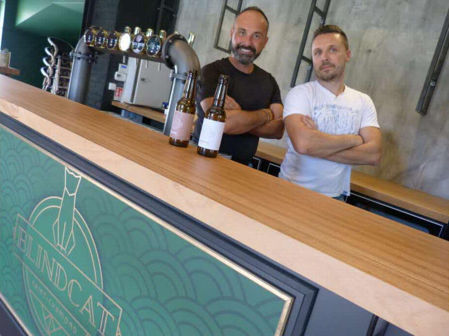
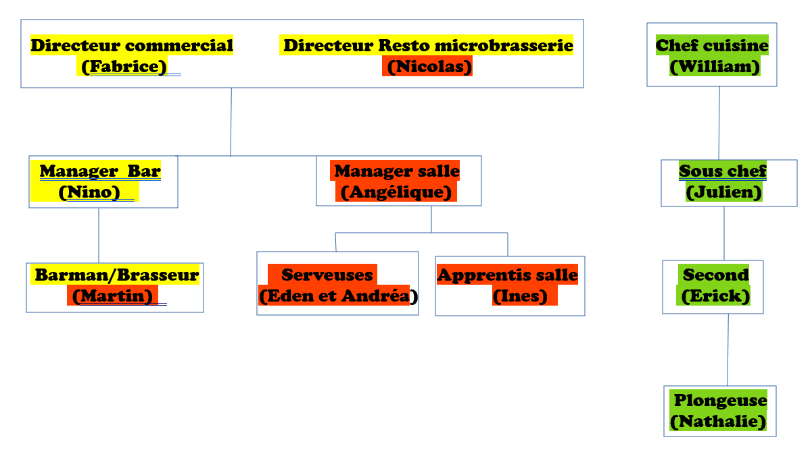
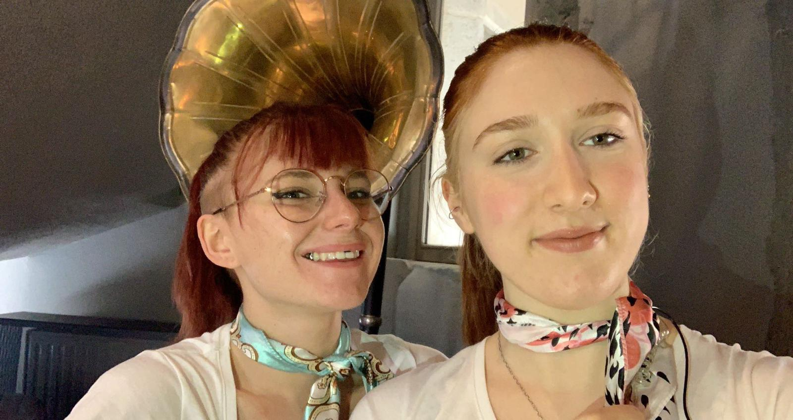
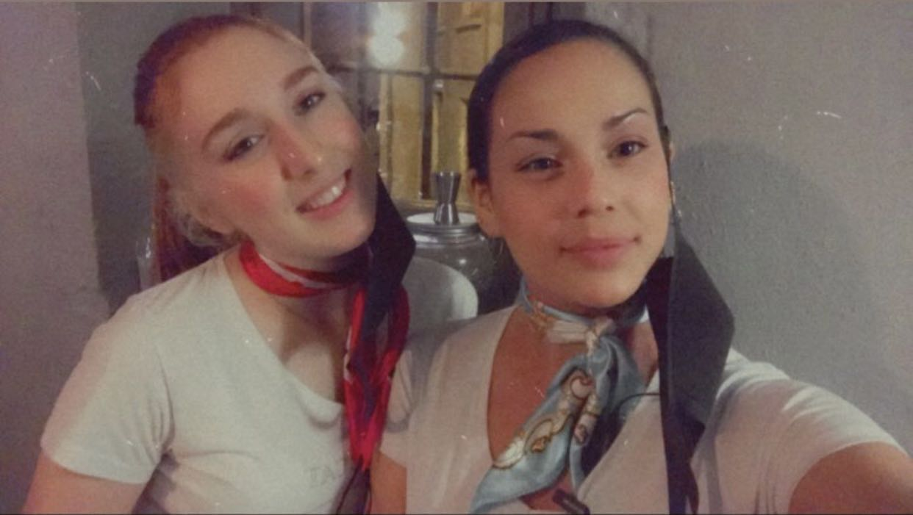

Bonjour à toi nouvel arrivant, nous te souhaitons tous la bienvenue !
↳ Pour commencer :
Cette histoire commence avec Nicolas Cioffi et William Martinez qui sont déjà associés dans une affaire de traiteur et de fond parfait. Ils sont appels à Fabrice Amiza qui est une entreprise d'événementiel. Un beau jour, ces trois messieurs décident de ne faire plus qu'un et d'ouvrir un restaurant "le BlindCat".
↳ Les valeurs de notre établissement :
- Une équipe à l'écoute
- Une équipe sympathique, jeune, pro et dynamique
- Sensation de bien être au travail
- Efficacité et bonne humeur

↳ Organigramme de l'entreprise :
↳ Jour de repos, vacances :
Bar :
Mardi au samedi soir
Restaurant :Lundi au vendredi midi
Mercredi au samedi soir
Vacances d'hiver24 décembre - 5 janvier
↳ Le concept du BlindCat :
Nous vous proposons du temps de midi un menu de jeux.
Pour le soir, une cuisine bistronomique et à partager vous est proposé.

↳ Les salaires :
Tous les commits et personnels avec peu d'expérience sont payés au SMIC hôtelier : 700,69 euros. Il faut aussi prendre en compte le parcours de chacun, ses différentes responsabilités pour le poste et évidemment la négociation.
↳ Le bâtiment :
Cette magnifique bâtisse du 17ème siècle. Elle appartient à la mairie de Saint-Chamond. Ce bâtiment a déjà accueilli plusieurs restaurants comme : La Maison des Chanaines et la Giraphe dans un jeu de quilles.
↳ Pourquoi le BlindCat :
Tout commence aux Etats-Unis en 1920 lors de la prohibition, il est donc apparu un peu partout dans le pays des speak easy, appelé aussi blind pig ou blindtigee. Voulant faire vivre ce lieu dans les années 20 et pour rendre hommage à ces lieux, les patrons ont gardé le "blind" qui veut dire aveugle et ont ajouté "cat" pour Saint-Chamond qui ont pour animal emblématique le chat.
↳ Les membres de l'équipe :
